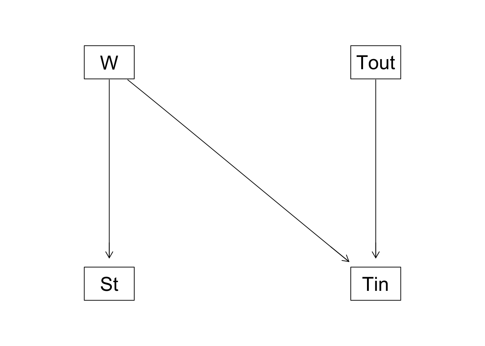
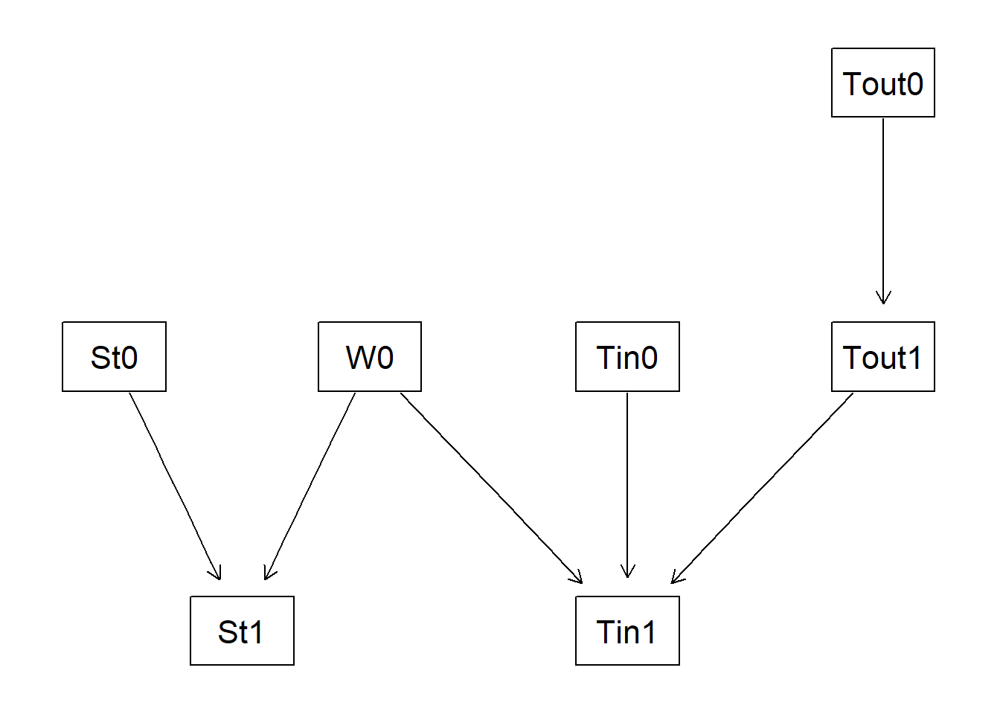

5 時系列データ：ダイナミック・ベイジアンネットワーク
本章以前のベイジアンネットワークをDBNに拡張する
5.1 事例紹介：ドモティクス(domotics)
民家で屋外の条件に応じて窓を開閉するためのマイクロコントローラのついたパッシブ換気（ただの窓の開け閉める）を設置して空気の質を保つ
センサーによって10分ごとに環境状況を測定できる
10分ごとの屋内の空気の質を予測し、屋内の新鮮な空気や快適な温度を保つために窓を開閉することを考える
5.2 グラフィカル表現
| 項目 | 略称 | 説明 |
|---|---|---|
| 風通しの悪さ | St | |
| 屋内温度 | Tin | |
| 屋外温度 | Tout | |
| 窓の開閉 | W | 二値変数 |
5.2.1 静的DAG
library(bnlearn)
#時間情報を取り除いた静的DAG
dag <- model2network("[W][Tout][Tin|W:Tout][St|W]")
graphviz.plot(dag)
5.2.2 ナイーブDAG

ある時点での値(t1)はそれに対応した10分前の値(t0)に依存する
静的DAGをコピーして変数t0とt1をリンクさせる
3つの仮定が含まれる
ノード間における依存構造はt0とt1で同じ
t1はt0に依存しているがその時点より前の変数には依存していない
t0とt1はその時点での瞬間ではなく、ある期間にわたっての平均値
限界
t0にかかるノードの周辺分布はt1周辺分布と等しい必要はない
パラメータ数が非常に多くなるため、推定時に安定しない
t0のノードがt1のノードと同一でt0とt1をリンクしたモデルのほうが望ましい


5.3 確率的表現
局所分布を扱うことができる
これまでの離散型、ガウシアン、CCBNなどをダイナミック・ベイジアンネットワークに適応することが可能
簡単にするため離散型ベイジアンネットワークを用いる
T.lv <- c("<18", "18-24", ">24")
Tout0.prob <- array(c(0.20, 0.70, 0.10), dim = 3,
dimnames = list(Tout0 = T.lv))
#屋外の気温はそんなに変わらないので80%の確率でt0と同じ
Tout1.prob <- array(c(0.80, 0.19, 0.01, 0.10, 0.80, 0.10, 0.01, 0.19, 0.80),
dim = c(3, 3),
dimnames = list(Tout1 = T.lv, Tout0 = T.lv))
Tout1.prob## Tout0
## Tout1 <18 18-24 >24
## <18 0.80 0.1 0.01
## 18-24 0.19 0.8 0.19
## >24 0.01 0.1 0.80#窓の開閉に関しては確率は0.5と言える
W.lv <- c("open", "closed")
W0.prob <- array(c(0.5, 0.5), dim = 2, dimnames = list(W0 = W.lv))
W0.prob## W0
## open closed
## 0.5 0.5#風通しの悪さはlow(風通しが良い)とhigh(悪い)のみとしSt0に一様分布を適用することとした
St.lv <- c("low", "high")
#最初は確率は半分ずつ
St0.prob <- array(c(0.50, 0.50), dim = 2, dimnames = list(St0 = St.lv))
#窓が開いているときは風通しが良い(low)６６６６６６６６６６確率が高くなるように設定
St1.prob <- array(c(0.90, 0.10, 0.70, 0.30, 0.70,
0.30, 0.10, 0.90), dim = c(2, 2, 2),
dimnames = list(St1 = St.lv, St0 = St.lv, W0 = W.lv))
St1.prob## , , W0 = open
##
## St0
## St1 low high
## low 0.9 0.7
## high 0.1 0.3
##
## , , W0 = closed
##
## St0
## St1 low high
## low 0.7 0.1
## high 0.3 0.9#快適な温度である確率が高くなるように設定
Tin0.prob <- array(c(0.10, 0.85, 0.05), dim = 3,
dimnames = list(Tin0 = T.lv))
#Tin0と同程度の温度となる確率が高くなるように設定
#Toutが高い、低いという値に依存して変化するように設定
#窓の開閉でTin1が変動する確率を変化
#<18から>24へ突然いかないようにした
Tin1.prob <- array(c(
# W0 = "open", Tin0 = "<18"
0.875, 0.125, 0, 0.075, 0.9, 0.025, 0.075, 0.7, 0.225,
# W0 = "closed", Tin0 = "<18"
0.875, 0.125, 0, 0.475, 0.5, 0.025, 0.025, 0.65, 0.325,
# W0 = "open", Tin0 = "18-24"
0.475, 0.525, 0, 0.075, 0.8, 0.125, 0, 0.875, 0.125,
# W0 = "closed", Tin0 = "18-24"
0.075, 0.9, 0.025, 0, 0.875, 0.125, 0, 0.475, 0.525,
# W0 = "open", Tin0 = ">24"
0.15, 0.725, 0.125, 0, 0.475, 0.525, 0, 0.475, 0.525,
# W0 = "closed", Tin0 = ">24"
0, 0.125, 0.875, 0, 0.075, 0.925, 0, 0.175, 0.825),
dim = c(3, 3, 2, 3),
dimnames = list(Tin1 = T.lv, Tout1 = T.lv, W0 = W.lv, Tin0 = T.lv))
Tin1.prob## , , W0 = open, Tin0 = <18
##
## Tout1
## Tin1 <18 18-24 >24
## <18 0.875 0.075 0.075
## 18-24 0.125 0.900 0.700
## >24 0.000 0.025 0.225
##
## , , W0 = closed, Tin0 = <18
##
## Tout1
## Tin1 <18 18-24 >24
## <18 0.875 0.475 0.025
## 18-24 0.125 0.500 0.650
## >24 0.000 0.025 0.325
##
## , , W0 = open, Tin0 = 18-24
##
## Tout1
## Tin1 <18 18-24 >24
## <18 0.475 0.075 0.000
## 18-24 0.525 0.800 0.875
## >24 0.000 0.125 0.125
##
## , , W0 = closed, Tin0 = 18-24
##
## Tout1
## Tin1 <18 18-24 >24
## <18 0.075 0.000 0.000
## 18-24 0.900 0.875 0.475
## >24 0.025 0.125 0.525
##
## , , W0 = open, Tin0 = >24
##
## Tout1
## Tin1 <18 18-24 >24
## <18 0.150 0.000 0.000
## 18-24 0.725 0.475 0.475
## >24 0.125 0.525 0.525
##
## , , W0 = closed, Tin0 = >24
##
## Tout1
## Tin1 <18 18-24 >24
## <18 0.000 0.000 0.000
## 18-24 0.125 0.075 0.175
## >24 0.875 0.925 0.825ダイナミック・ベイジアンネットワークを作成する
dag <- model2network(paste0("[W0][St0][Tout0][Tin0][St1|St0:W0]",
"[Tout1|Tout0][Tin1|Tin0:W0:Tout1]"))
graphviz.plot(dag)
#確率表を組み合わせる
cpt <- list(Tout0 = Tout0.prob, Tout1 = Tout1.prob, W0 = W0.prob,
Tin0 = Tin0.prob, Tin1 = Tin1.prob, St0 = St0.prob,
St1 = St1.prob)
dbn <- custom.fit(dag, cpt)## [1] 52このようにDBNでは必要となるパラメータが容易に増えてしまう
簡素化を図ったがそれでも多い。
5.4 DBNの学習
#作ったDBNをもとに2000個のサンプルを生成しておく
domotics <- rbn(dbn, 2000)
write.table(domotics, file = "data/domotics.txt")DBNに特有の統計手法は特に必要ない
一部異なるところがあるので以下で説明する
#t0とt1で別々に学習する必要がある
t0.nodes <- c("W0", "St0", "Tout0", "Tin0")
t1.nodes <- c("St1", "Tout1", "Tin1")t0でのノードは単独で存在しており、アークはないためブラックリストに入れる
t1からt0へ向かうすべてのアークに対してブラックリストに入れる
## from to
## [1,] "St0" "W0"
## [2,] "Tout0" "W0"
## [3,] "Tin0" "W0"
## [4,] "W0" "St0"
## [5,] "Tout0" "St0"
## [6,] "Tin0" "St0"
## [7,] "W0" "Tout0"
## [8,] "St0" "Tout0"
## [9,] "Tin0" "Tout0"
## [10,] "W0" "Tin0"
## [11,] "St0" "Tin0"
## [12,] "Tout0" "Tin0"
## [13,] "St1" "W0"
## [14,] "Tout1" "W0"
## [15,] "Tin1" "W0"
## [16,] "St1" "St0"
## [17,] "Tout1" "St0"
## [18,] "Tin1" "St0"
## [19,] "St1" "Tout0"
## [20,] "Tout1" "Tout0"
## [21,] "Tin1" "Tout0"
## [22,] "St1" "Tin0"
## [23,] "Tout1" "Tin0"
## [24,] "Tin1" "Tin0"## [1] TRUE
5.5 DBNを使ってみよう
予測のために用いる点に注意
5.5.1 屋内適温、屋外寒冷、風通しは良くないとき、風通しがよく適温にするために窓を開けるべきか？
#窓を閉めたままパターン
print(paste("close:",
cpquery(dbn.fit, event = (St1 == "low") & (Tin1 == "18-24"),
evidence = (St0 == "high") & (Tin0 == "18-24") &
(Tout0 == "<18") & (W0 == "closed"))
)
)## [1] "close: 0.0977272727272727"#窓を開けたパターン
print(paste("open:",
cpquery(dbn.fit, event = (St1 == "low") & (Tin1 == "18-24"),
evidence = (St0 == "high") & (Tin0 == "18-24") &
(Tout0 == "<18") & (W0 == "open"))
)
)## [1] "open: 0.491189427312775"以上より窓を開けることでより達成に近づくがその確率は0.5を下回っており低い
5.5.2 t0で屋外の状態が不明なとき、窓を開けるべきか
cpquery(dbn.fit, event = (St1 == "low") & (Tin1 == "18-24"),
evidence = (St0 == "high") & (Tin0 == "18-24") & (W0 == "closed"))## [1] 0.09401709cpquery(dbn.fit, event = (St1 == "low") & (Tin1 == "18-24"),
evidence = (St0 == "high") & (Tin0 == "18-24") & (W0 == "open"))## [1] 0.5702792この結果はTout0における平均的な状態で条件づけた場合の確率を示す
5.5.3 このプロセスを自動化する
evidence <- data.frame(St0 = factor("high", levels = St.lv),
Tin0 = factor("18-24", levels = T.lv),
Tout0 = factor("<18", levels = T.lv),
W0 = factor("open", levels = W.lv))t0において観察される状態を生成しておく
## [1] 18-24
## Levels: <18 18-24 >24#Tin1をもとに続いてSt1の状態を予測する
evidence$Tin1 <- factor("18-24", levels = T.lv)
predict(dbn.fit, data = evidence, node = "St1", method = "bayes-lw")## [1] low
## Levels: low highlowとなったことから、openにすることで適温かつ風通しが良い状態になることが予測される
#逆にclosedにするとhighとなり風通しが悪くなることが予想される
evidence <- data.frame(St0 = factor("high", levels = St.lv),
Tin0 = factor("18-24", levels = T.lv),
Tout0 = factor("<18", levels = T.lv),
W0 = factor("closed", levels = W.lv))
predict(dbn.fit, data = evidence, node = "Tin1", method = "bayes-lw")## [1] 18-24
## Levels: <18 18-24 >24evidence$Tin1 <- factor("18-24", levels = T.lv)
predict(dbn.fit, data = evidence, node = "St1", method = "bayes-lw")## [1] high
## Levels: low high5.6 DBNの図示
- DAGは左から右に流れるように表示する
#t0とt1でグルーピングする
t0.nodes <- c("W0", "St0", "Tout0", "Tin0")
t1.nodes <- c("St1", "Tout1", "Tin1")
#sg0 <- list(graph = subGraph(t0.nodes, gR), cluster = TRUE)
#sg1 <- list(graph = subGraph(t1.nodes, gR), cluster = TRUE)ここで各ノードをグループ化していい感じに表示できるはずだが、subGraphの関数のエラー？により描画できず。。
分かる方教えてほしいです。
参考文献はこちら